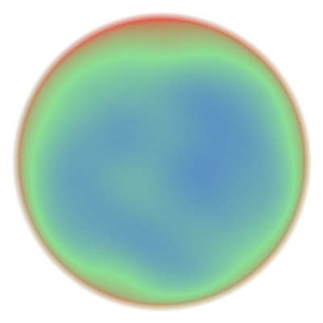
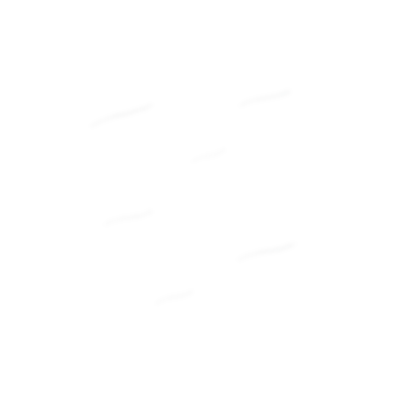
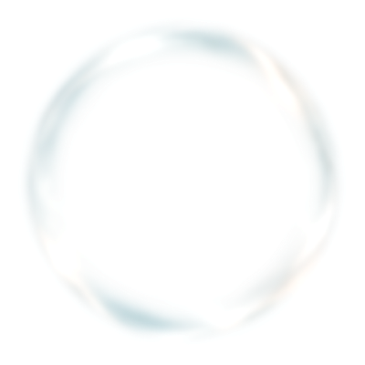
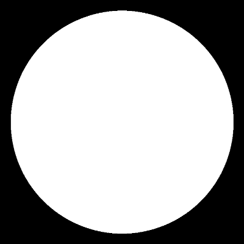
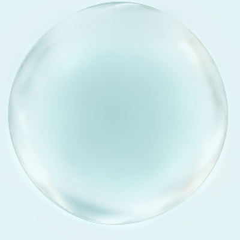
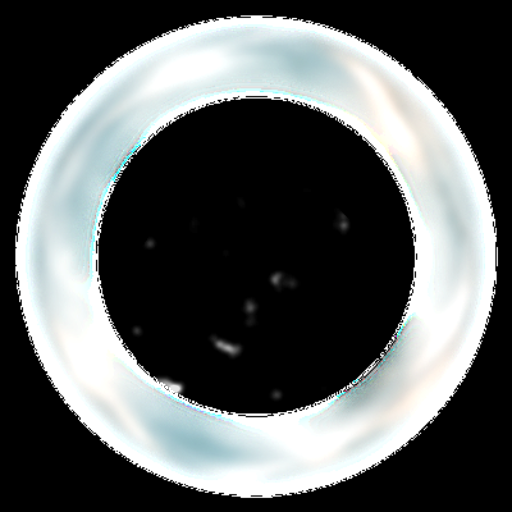
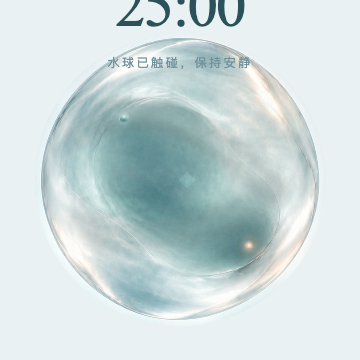
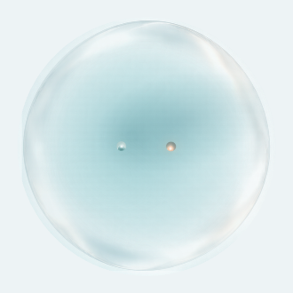

M2.1 OPTICAL SEMANTICS CORRECTION
verification-only · frozen M1 sources · 静止、无 core、无 formation、无 deformation、无 animation · 不改 production
M2.1 OPTICAL SEMANTICS HERO
CURRENT EXPERIMENTAL WEBGL PATH · SHELL FROZEN = ALPHA-AWARE
INPUTS / GPU DEBUG





BEFORE / AFTER + STATIC REFERENCE REVIEW



PRIMARY_STATIC_MATERIAL_TARGET = FINAL_ART_025 · DEPTH / THICKNESS_TARGET = FINAL_ART_050 · OPTICAL_FAMILY_UPPER_AUTHORITY = FROZEN_K2 · NEUTRAL_POSE_RESTRAINT = D K0。页面不直接采样 references 进入 shader。




FINAL_ART_025 · FINAL_ART_050 · FROZEN_K2 · D K0